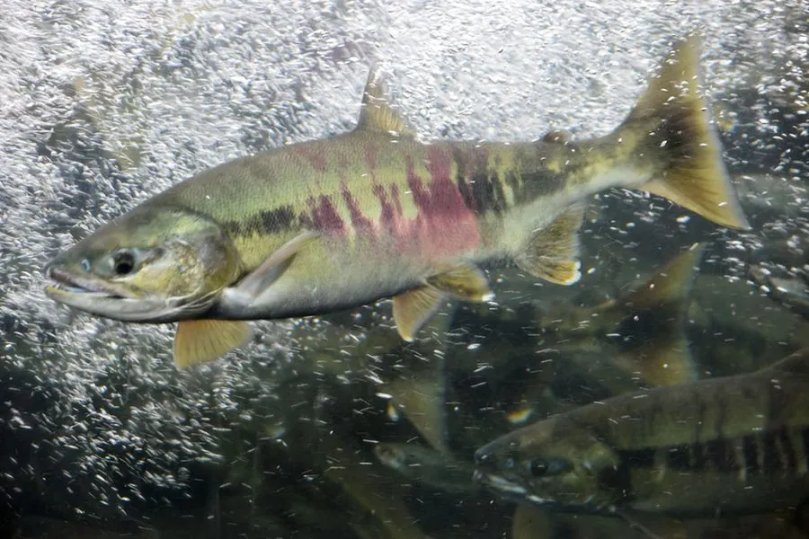

鱼类 · 动物界
大马哈鱼 Oncorhynchus keta

在江河孵化、游向大海育肥、成熟后逆流返回出生地繁殖的鲑鱼，产卵后多数亲鱼耗尽体力而死，是中国东北著名的洄游鱼类。
- 分类
- 门脊索动物门纲硬骨鱼纲目鲑形目科鲑科属太平洋鲑属
- 栖息环境
- 北太平洋的寒温带海域育肥，秋季溯河到砾石河床的淡水河流产卵
- 地理分布
- 北太平洋两岸，包括日本、俄罗斯远东、中国东北黑龙江和图们江流域及北美西岸
- 保护级别
- IUCN 无危（LC）；中国未列入国家重点保护野生动物名录
物种志
大马哈鱼体呈长纺锤形，背部蓝绿或暗褐色，体侧银白，腹部白色；与很多鲑鱼不同，它的体侧没有明显的黑色斑点，繁殖期会出现暗红色的横斑。生殖期雄鱼下颌延长成钩状，背鳍变高，体色变深。成鱼体长一般 60–80 cm，体重 3–6 kg，最大记录超过 1 m、体重 15 kg 以上。
大马哈鱼是典型的溯河洄游鱼类，分布于北太平洋两岸，从日本、俄罗斯远东、中国东北到北美西岸。幼鱼在淡水河流中孵化，顺流入海，在鄂霍次克海和白令海等海域育肥 2–4 年，成熟后凭嗅觉返回出生的河流，逆流上溯数百至上千千米，途中几乎不进食，靠消耗体内的脂肪和肌肉提供能量。繁殖期在秋季，雌鱼在砾石河床上挖坑产卵，雄鱼守护卵床，产卵后亲鱼大多力竭而死。中国黑龙江、乌苏里江和图们江流域是其洄游河流的南缘，历史上资源丰富，20 世纪后期因水坝、河道破坏和过度捕捞明显减少，如今建有繁育放流站。目前其全球评估为无危，中国未将其列入国家重点保护野生动物名录。
形态与习性
- 食性幼鱼吃水生昆虫，成鱼在海洋中捕食小鱼、甲壳类和乌贼
- 体长一般 60–80 cm，最大可超过 1 m
- 体重常见 3–6 kg，最大可超过 15 kg
- 洄游淡水孵化，入海育肥 2–4 年后逆流返回出生河流
- 繁殖秋季在砾石河床挖坑产卵，产卵后多数亲鱼死亡
- 寿命约 3–6 年
趣味知识
- 大马哈鱼能记住出生河流的气味，从大海准确回到故乡产卵。
- 洄游期间它几乎不进食，全靠体内储存的能量逆流而上。
- 产卵后亲鱼大多死亡，它们的尸体为河流生态系统带回了大量海洋养分。
生态关系
- 捕食 ← 棕熊 秋季棕熊捕食洄游鲑鱼